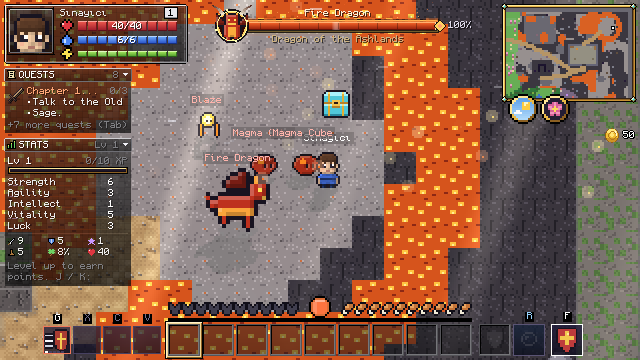
Gerçek zamanlı dövüş
Vuruş bekleme süresi, atılma, kritik vuruşlar. Her boss'un kendi hamleleri var; canı azalınca kendini iyileştirir, sert vurarak şifasını bozarsın.
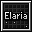
ELARIAElaria bilgisayar için yapıldı: telefonda, tablette ya da televizyonda oynanamaz. Tanıtıma yine de göz atabilirsin.
Bir Ymir's Studio oyunu
Kara sisin altında bekleyen bir piksel dünyası. Gerçek zamanlı dövüş, 43 boss, binlerce eşya ve sonuna kadar senin olan bir yolculuk.
Önsöz
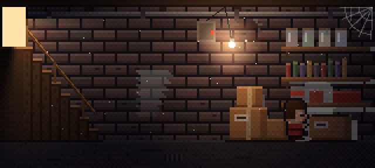
Yıllardır kimsenin inmediği bodrumda tozlu bir kutu vardı. Kutunun dibinde bir oyun duruyordu.
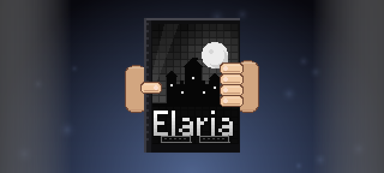
Ne yapımcısı yazıyordu ne de yılı. Yalnızca tek bir kelime: Elaria.
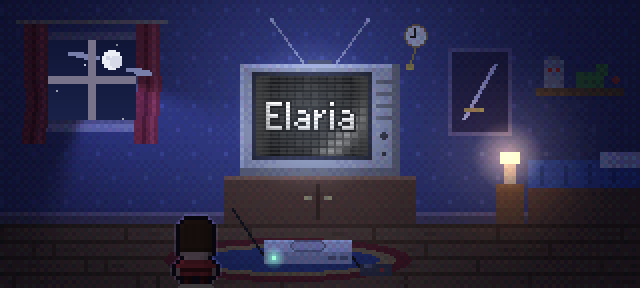
O gece oyunu eski konsoluna taktı. Daha düğmeye basmadan ekran aydınlandı.
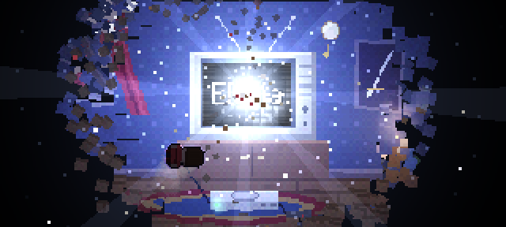
Ve Elaria onu içine çekti.
Hikâye burada başlıyor.
Kara Sis
Başta yalnız Kuzey Ovaları açık. Her diyarın boss'larını yen; kara sis bir sonrakinin üstünden kalkar.
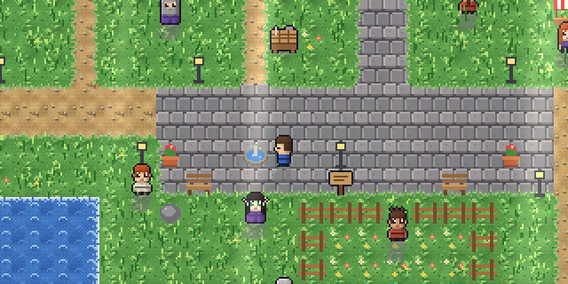
Tehlike I
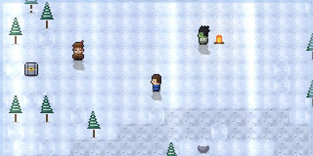
Tehlike II
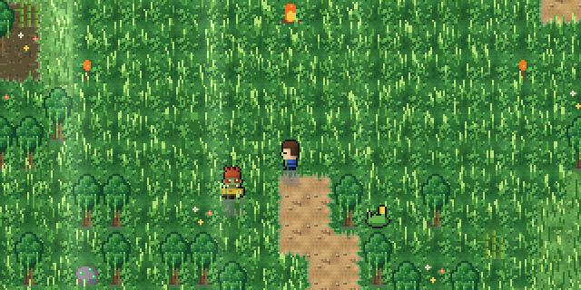
Tehlike III
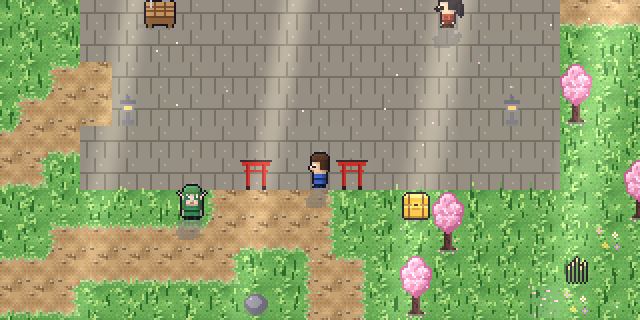
Tehlike IV
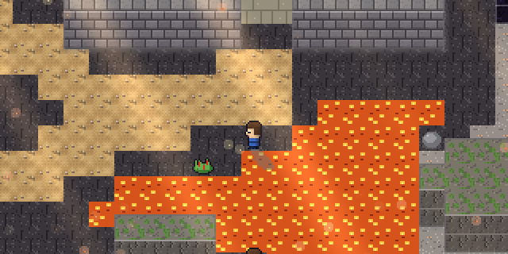
Tehlike V
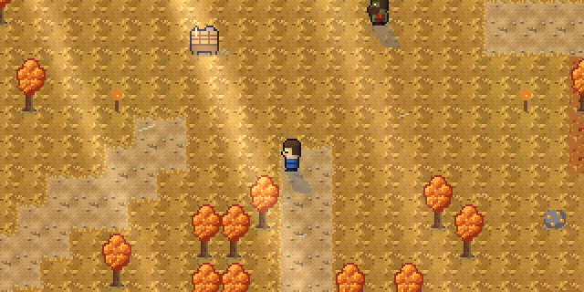
Tehlike VI
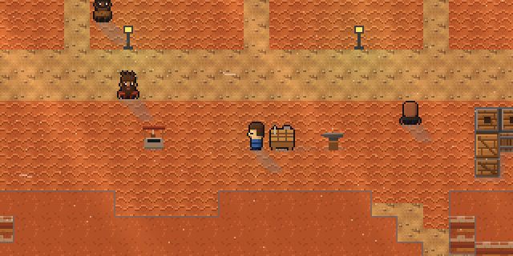
Tehlike VII
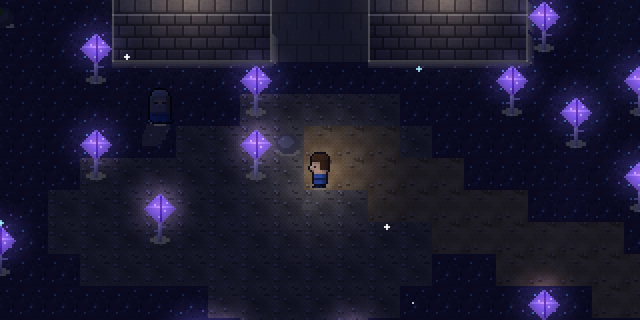
Tehlike VIII
Elaria'da neler var

Vuruş bekleme süresi, atılma, kritik vuruşlar. Her boss'un kendi hamleleri var; canı azalınca kendini iyileştirir, sert vurarak şifasını bozarsın.
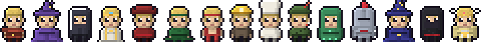
Her ırkın kendi yeteneği, her sınıfın kendi dövüş tarzı var. Yetenekler rütbe atladıkça yeni hileler kazanır.
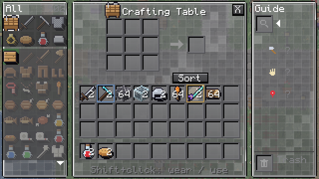
902 tarif, örste güçlendirme ve büyü, yere konan bloklar, fırın, sandık ve tarla.
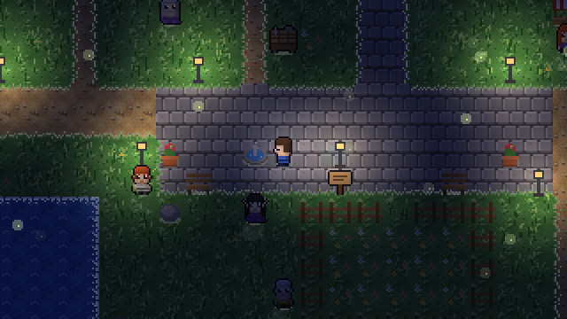
Dört mevsim, gece ve gündüz, fırtınalar. Kan Ayı'nda canavarlar azar, yıldız yağmurunda gök cömert olur.
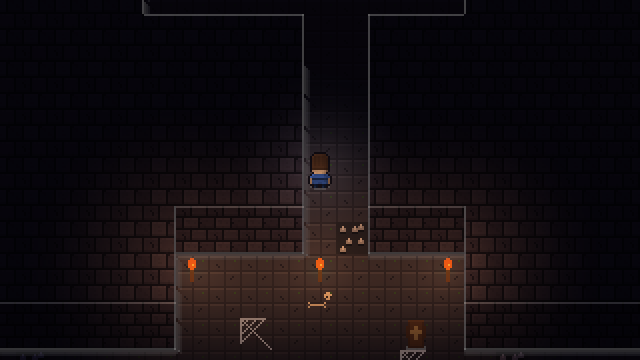
Unutulmuş Mezar, Ayaz Kalesi, Eski Maden. Kapıları aç, geçitlerden başka diyarlara geç; her yarığın kendi tehlikesi var.
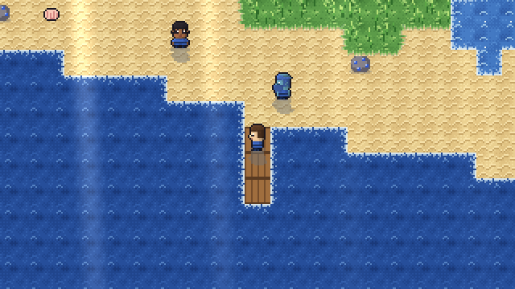
Atını eyerle, kurdunu evcilleştir, kayığınla göle açıl, oltanı at.
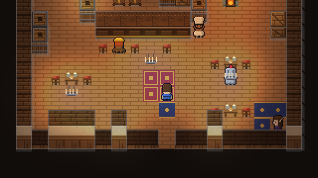
İki kişilik
Biri oyunu kurar, öteki aynı Wi-Fi'dan katılır. Aynı dünyayı paylaşırsınız: kesilen ağaç, açılan sandık, yenilen boss ikiniz için de geçerli. Canavarlar iki kişiye göre güçlenir.
Yalnız indirilen sürümde.
Yolculuk başlasın
İndirme bağlantısı site yayınlanınca eklenecek.
Oyun henüz dijital imzalı değil, bu yüzden bu uyarı herkese çıkar.